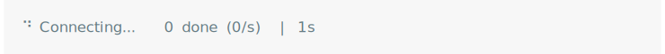
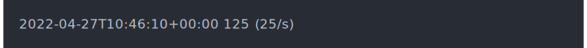

Progress bar variables
Details
These variables can be used in cli progress bar format
strings. They are calculated on demand. To use a variable, e.g. pb_bar
in a package, you either need to to import pb_bar from cli, or use
the qualified form in the format string: cli::pb_bar.
Similarly, in R scripts, you can use pb_bar after library(cli),
or cli::pb_bar if you do not attach the cli package.
pb_bar
Creates a visual progress bar. If the number of total units is unknown, then it will return an empty string.
cli_progress_bar( total = 100, format = "Fitting model {cli::pb_bar} {cli::pb_percent}" )
pb_current
The number of current progress units.
cli_progress_bar( total = 100, format = "{cli::pb_spin} Reading file {cli::pb_current}/{cli::pb_total}" )

pb_current_bytes
The number of current progress units formatted as bytes. The output has a constant width of six characters.
cli_progress_bar( format = "Got {cli::pb_current_bytes} in {cli::pb_elapsed}" )

pb_elapsed
The elapsed time since the start of the progress bar. The time is
measured since the progress bar was created with cli_progress_bar()
or similar.
cli_progress_bar( total = 100, format = "{cli::pb_bar} {cli::pb_percent} [{cli::pb_elapsed}]" )

pb_elapsed_clock
The elapsed time, in hh::mm::ss format.
cli_progress_bar( total = 100, format = "{cli::pb_bar} {cli::pb_percent} [{cli::pb_elapsed_clock}]" )

pb_elapsed_raw
The number of seconds since the start of the progress bar.
cli_progress_bar( total = 100, format = "{cli::pb_bar} {cli::pb_percent} [{round(cli::pb_elapsed_raw)}s]" )
pb_eta
The estimated time until the end of the progress bar, in human readable form.
cli_progress_bar( total = 100, format = "{cli::pb_bar} {cli::pb_percent} | ETA: {cli::pb_eta}" )

pb_eta_raw
The estimated time until the end of the progress
bar, in seconds. This is useful if you want to adjust the default
pb_eta display.
cli_progress_bar( total = 100, format = "{cli::pb_bar} {cli::pb_percent} | ETA: {round(cli::pb_eta_raw)}s" )

pb_eta_str
The estimated time until the end of the progress bar.
It includes the "ETA:" prefix. It is only shown if the time can be
estimated, otherwise it is the empty string.
cli_progress_bar( total = 100, format = "{cli::pb_bar} {cli::pb_percent} | {cli::pb_eta_str}" )

pb_extra
pb_extra can be used to access extra data, see the extra argument
of cli_progress_bar() and cli_progress_update().
cli_progress_bar( total = 100, extra = list(user = whoami::username()), format = "Cleaning cache for user '{cli::pb_extra$user}': {cli::pb_current_bytes}" )
pb_id
The id of the progress bar. The id has the format
cli-<pid>-<counter> where <pid> is the process id, and
<counter> is an integer counter that is incremented every time
cli needs a new unique id.
This is useful for debugging progress bars.
cli_progress_bar( format = "Progress bar '{cli::pb_id}' is at {cli::pb_current}" )
pb_name
The name of the progress bar. This is supplied by the developer, and it is by default the empty string. A space character is added to non-empty names.
cli_progress_bar( name = "Loading training data", total = 100, format = "{cli::pb_name} {cli::pb_bar} {cli::pb_percent}" )
pb_percent
The percentage of the progress bar, always formatted
in three characters plus the percentage sign. If the total number of
units is unknown, then it is " NA%".
cli_progress_bar( total = 100, format = "{cli::pb_bar} {cli::pb_percent}" )

pb_pid
The integer process id of the progress bar. This is useful if you are aggregating logging output or progress results from multiple processes.
pb_rate
The progress rate, in number of units per second, formatted in a string.
cli_progress_bar( total = 156, format = "Reading input files {pb_current}/{pb_total} [{pb_rate}]" )
pb_rate_raw
The raw progress rate, in number of units per second.
cli_progress_bar( total = 156, format = "Reading input files {pb_current}/{pb_total} [{round(pb_rate_raw)}/s]" )

pb_rate_bytes
The progress rate, formatted as bytes per second, in human readable form.
cli_progress_bar(
total = 256 * 1024 * 1014,
format = paste0(
"Reading data {pb_current_bytes}/{pb_total_bytes} ",
"[{ansi_trimws(pb_rate_bytes)}]"
)
pb_spin
A spinner. The default spinner is selected via a get_spinner() call.
cli_progress_bar( total = 100, format = "{cli::pb_spin} Reading file {cli::pb_current}/{cli::pb_total}" )
pb_status
The status string of the progress bar. By default this is an empty
string, but it is possible to set it in cli_progress_bar()
and `cli_progress_update()].
cli_progress_bar(status = "Connecting...")

pb_timestamp
A time stamp for the current time in ISO 8601 format.
cli_progress_bar(
"Loading training data files",
format = "{pb_timestamp} {pb_current} ({pb_rate})"

pb_total
The total number of progress units, or NA if the number of units is
unknown.
cli_progress_bar( total = 100, format = "{cli::pb_spin} Reading file {cli::pb_current}/{cli::pb_total}" )
pb_total_bytes
The total number of progress units, formatted as bytes, in a human readable format.
cli_progress_bar(
total = 256 * 1024 * 1014,
format = paste0(
"Reading data {pb_current_bytes}/{pb_total_bytes} ",
"[{ansi_trimws(pb_rate_bytes)}]"
)